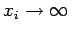
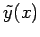
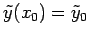
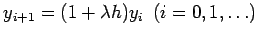
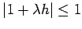
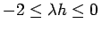

Inhalt Index DeskTop Bronstein

 Numerische Mathematik Integration gewöhnlicher Differentialgleichungen Anfangswertaufgaben Konvergenz, Konsistenz, Stabilität
Numerische Mathematik Integration gewöhnlicher Differentialgleichungen Anfangswertaufgaben Konvergenz, Konsistenz, Stabilität


Bei der praktischen Durchführung von Einschrittverfahren kommt zum globalen Diskretisierungsfehler O(hp) noch ein Rundungsfehleranteil O(1/h) hinzu. Das hat zur Folge, daß mit einer nicht zu kleinen, endlichen Schrittweite h > 0 gerechnet werden muß. Dabei ist die Frage wichtig, wie sich die numerische Lösung yi eines Einschrittverfahrens gegenüber Störungen des Anfangswertes verhält, und zwar auch für den Fall .
In der Theorie der gewöhnlichen Differentialgleichungen heißt eine Anfangswertaufgabe (19.93) stabil bezüglich Störungen ihrer Anfangswerte, wenn gilt:
Dabei ist  die Lösung von (19.93) mit der gegenüber y0 gestörten Anfangsbedingung . Die Abschätzung (19.114) besagt, daß die Lösungsänderung betragsmäßig nicht größer ist als die Störung des Anfangswertes.
Im allgemeinen läßt sich (19.114) nur schwer überprüfen. Deshalb führt man die lineare Testaufgabe
ein, die stabil ist, und prüft ein Einschrittverfahren an dieser speziellen Anfangswertaufgabe. Man sagt: Ein konsistentes Einzelschrittverfahren heißt für die Schrittweite h > 0 absolut stabil bezüglich Störungen des Anfangswertes, wenn alle damit für das lineare Testproblem (19.115) berechneten Näherungen yi der Abschätzung
genügen.
| Beispiel |
|
Für (19.115) ergibt das EULERsche Polygonzugverfahren (19.97) . Man sieht, daß (19.116) für  gilt, und erhält dadurch die Schrittweitenbeschränkung . |